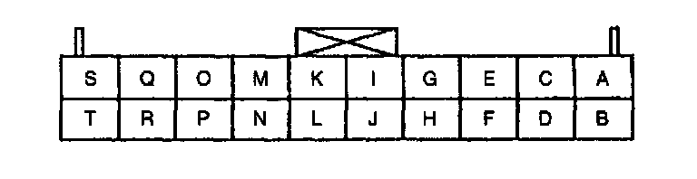
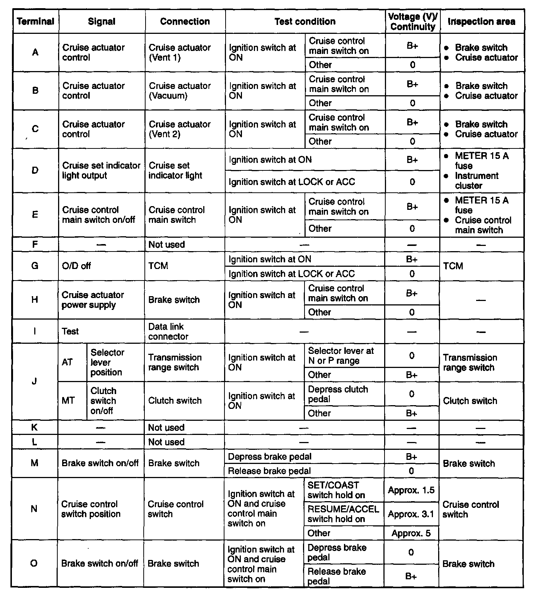
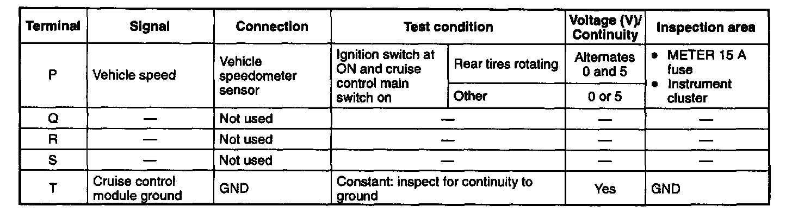

Cruise Control Module Inspection
CRUISE CONTROL MODULE INSPECTION1. Remove the lower panel.
2. Remove the key interlock unit.
3. Remove the cruise control module with the connector connected.
4. Measure the voltage at the cruise control module terminals as indicated below.
5. Disconnect the cruise control module connector before inspecting for continuity at terminal T.
6. If not as specified, inspect the parts listed under "Inspection area" and the related wiring harnesses.
7. If the parts and wiring harnesses are okay but the system still does not work properly, replace the cruise control module.
Connector View:

Terminal Values Part 1 Of 2:

Terminal Values Part 2 Of 2:
